Loading ...
|
4-3-3
|
Norway | 1 | - | 4 | France |
4-2-3-1
|
| HT 1-3 | ||||||
|
FIFA World CupFriday 26 June 2026
|
||||||
- Venue
- Boston Stadium
- Attendance
- 64,146
- Referee
- Michael Oliver
Yellow card10'
P. Berg
Goal21'
T. Aasgaard
Assist: A. Schjelderup
- 2
Substitution46'
K. Thorstvedt
M. Thorsby
F. Bjørkan
M. Pedersen
Missed penalty50'
J. Strand Larsen
Substitution66'
H. Falchener
S. Langås
- 2
Substitution83'
O. Bobb
A. Nusa
A. Schjelderup
J. Hauge
Whistle45+6'
45+6'
Goal7'
O. Dembélé
Assist: K. Mbappé
Goal20'
O. Dembélé
Assist: K. Mbappé
Goal32'
O. Dembélé
Assist: A. Tchouaméni
- 2
Substitution65'
M. Olise
R. Cherki
O. Dembélé
B. Barcola
Yellow card74'
A. Tchouaméni
Substitution76'
D. Upamecano
I. Konaté
- 2
Substitution87'
J. Koundé
M. Gusto
K. Mbappé
J. Mateta
Goal90+4'
D. Doué
Assist: B. Barcola
Norway | |
|---|---|
Goalkeeper | |
| 13 | E. Selvik |
Defender | |
| 4 | L. Østigård |
| 14 | F. Aursnes |
| 15 | F. Bjørkan 46' |
| 25 | H. Falchener 66' |
Midfielder | |
| 6 | P. Berg 10' |
| 18 | K. Thorstvedt 46' |
| 19 | T. Aasgaard 21' |
Forward | |
| 11 | J. Strand Larsen 50' |
| 21 | A. Schjelderup 83' |
| 22 | O. Bobb 83' |
Substitutes | |
| 2 | M. Thorsby 46' |
| 16 | M. Pedersen 46' |
| 20 | A. Nusa 83' |
| 23 | J. Hauge 83' |
| 24 | S. Langås 66' |
France | |
Goalkeeper | |
| 16 | M. Maignan |
Defender | |
| 4 | D. Upamecano 76' |
| 5 | J. Koundé 87' |
| 19 | T. Hernández |
| 26 | M. Lacroix |
Midfielder | |
| 6 | M. Koné |
| 7 | O. Dembélé 7'20'32'65' |
| 8 | A. Tchouaméni 74' |
| 11 | M. Olise 65' |
| 20 | D. Doué 90+4' |
Forward | |
| 10 | K. Mbappé 87' |
Substitutes | |
| 2 | M. Gusto 87' |
| 12 | B. Barcola 65' |
| 15 | I. Konaté 76' |
| 22 | J. Mateta 87' |
| 24 | R. Cherki 65' |


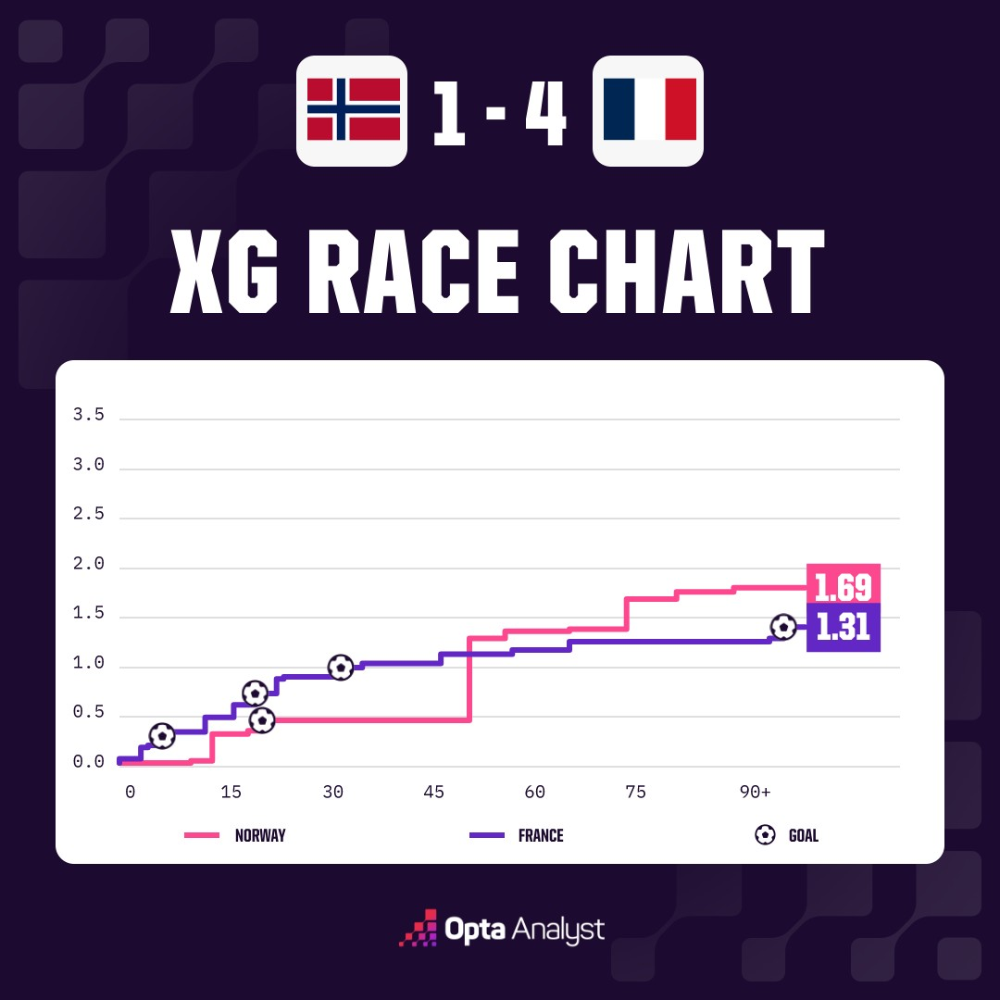
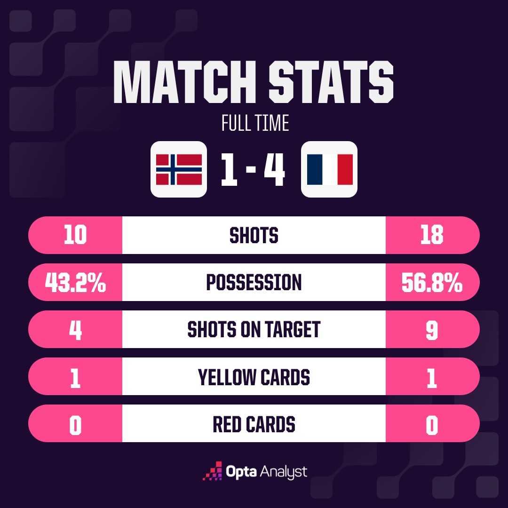
97'
France have won their last 3 games in the FIFA World Cup, their last joint longest winning streak was from 4th December 2022 to 14th December 2022.
97'
Norway attempted 10 shots in this game, their lowest total in a single match in the 2026 FIFA World Cup.
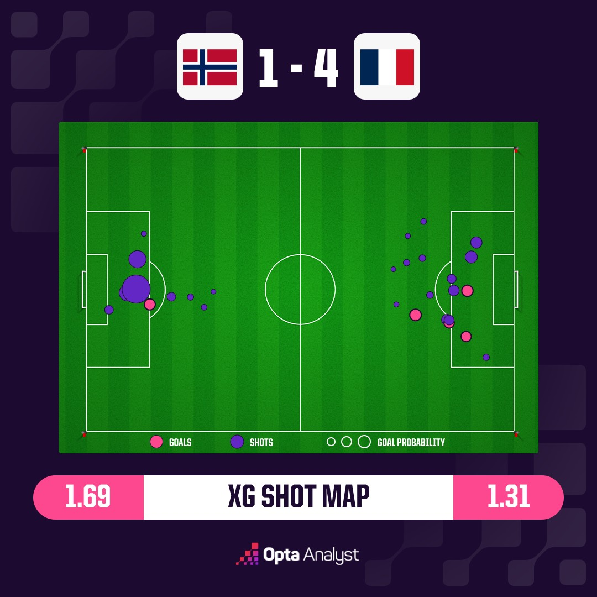
90+6'
That's it! The referee blows the whistle and we have reached full-time. The final score at Boston Stadium is Norway 1-4 France.
90+5'
Free-kick! A foul from Rayan Cherki on Thelo Aasgaard. It is well away from France’s goal, so it is unlikely to result in a chance for Norway.
90+4'
Bradley Barcola has assisted his first goal in the 2026 FIFA World Cup.
90+4'
France have scored 4 goals in the FIFA World Cup game for the first time since 22nd November 2022 against Australia (W4-1).
90+4'
Désiré Doué has scored his first goal in the 2026 FIFA World Cup.
90+4'
Is that game over? France are now well ahead, having extended their lead to 3 goals thanks to Désiré Doué’s effort. It’s now 4-1, and Norway face an uphill battle to get back into it.
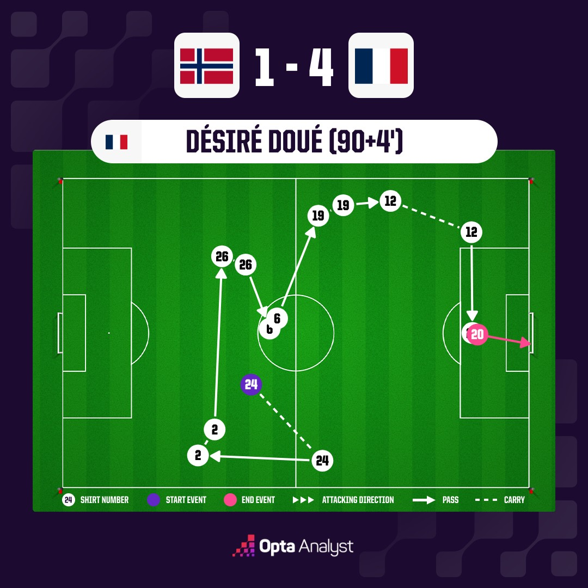
90+3'
It’s backs to the wall now — France throwing everything into defending their advantage, with a flurry of crucial interventions.
90+2'
There is plenty of possession for France, with 65.00% compared to Norway 35.00 % in the last 15 minutes. However, France have not been able to turn that dominance of the ball into a goal.
90+2'
MISS! A shot from Théo Hernández ends up being off target. They might have done a bit better with that one, but it remains France 3-1 Norway.
88'
The France defence steps up in time and there is a frustration for Jørgen Strand Larsen, who thought they were through until the flag goes up to signal offside.
87'
No luck! Fredrik Aursnes takes on a shot that, had they got it right, might have been set to test the goalkeeper, but instead it is sent off target and France come away unscathed.
87'
France are making a tactical change. Kylian Mbappé is leaving the field and in their place comes Jean Mateta – we will soon see if this switch has the desired impact.
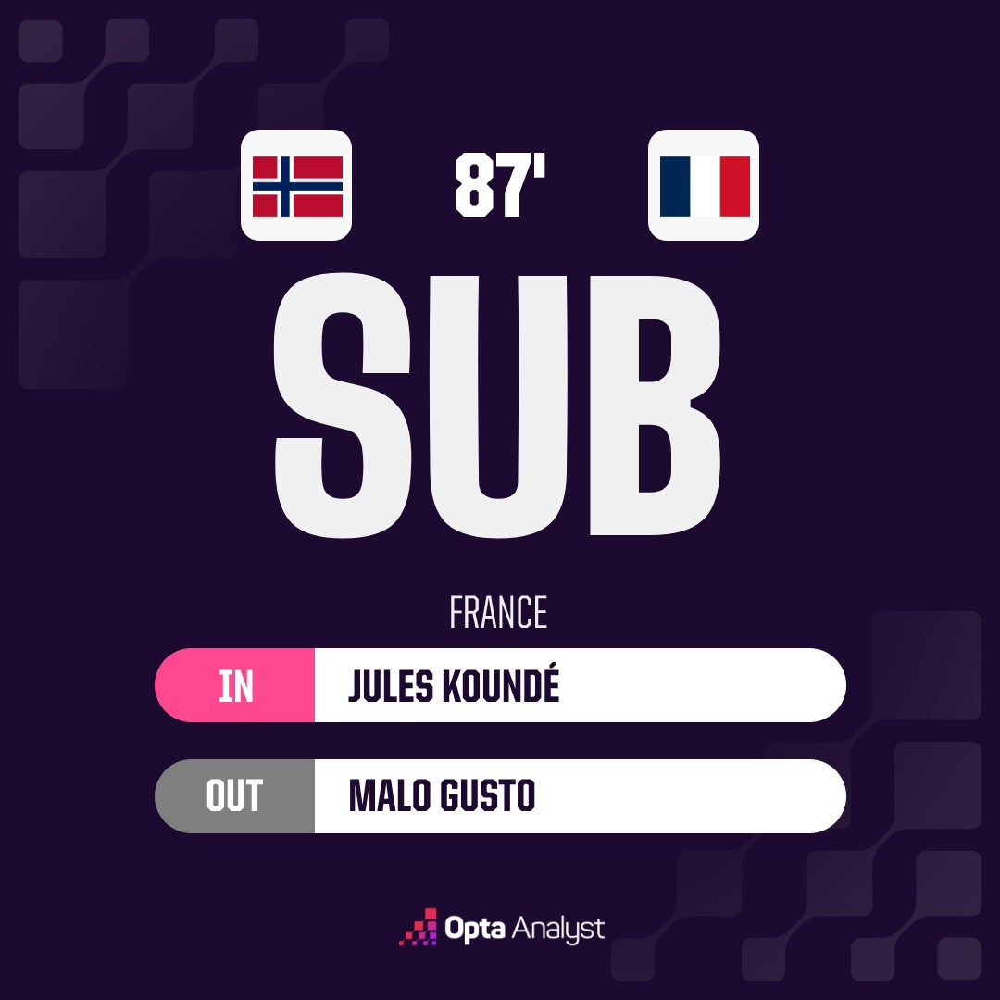
87'
The France manager is looking to the substitutes’ bench, bringing on Malo Gusto in place of Jules Koundé. Will the change make a difference? Let’s find out!
83'
Substitution! Jens Hauge replaces Andreas Schjelderup for Norway as the manager shuffles the pack. Can Jens Hauge make an impression as this match continues?
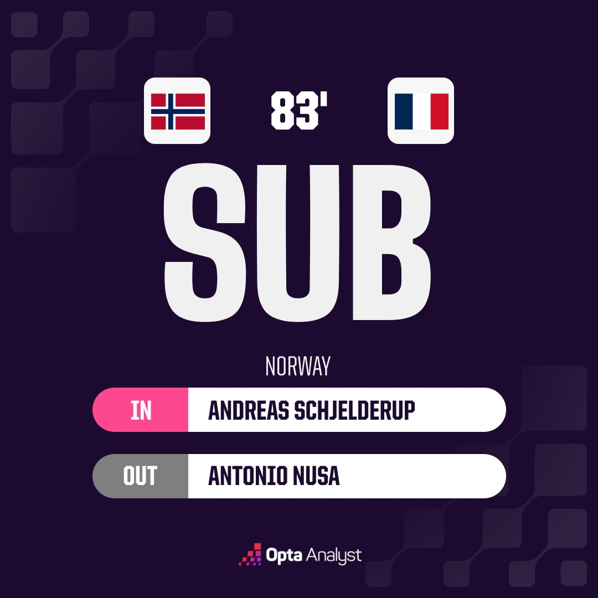
83'
A substitution for Norway sees Oscar Bobb replaced by Antonio Nusa. There does not appear to be any obvious sign of an injury, so that is a tactical switch.
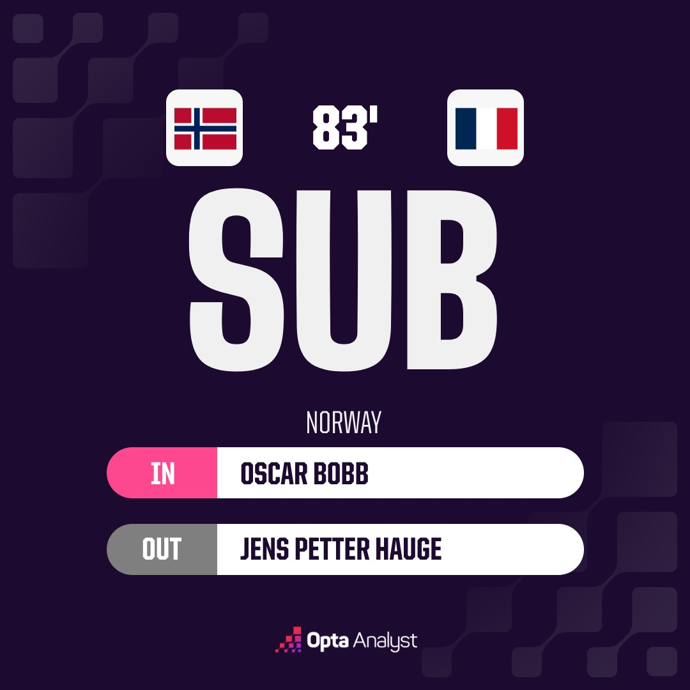
82'
A foul from Bradley Barcola on Oscar Bobb sees Norway win a free-kick, but it is not in a dangerous position, so France should be confident they can defend it easily enough.
80'
Masterclass in game management from France. They're making Norway chase ghosts with these patient passing moves, content to keep the ball until the final whistle.
79'
That might have been going in! A fantastic block from Maxence Lacroix, who gets in the way of a goal-bound effort from Patrick Berg. Would the goalkeeper have been beaten? We will never know.
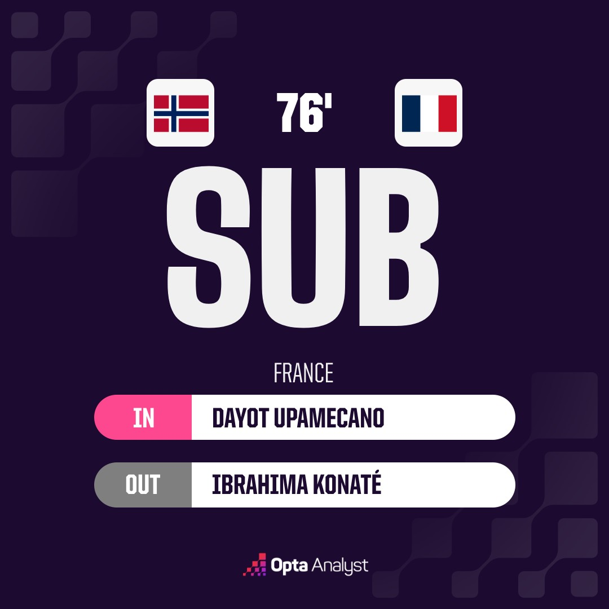
76'
France have had more of the ball with 75 minutes played, with 56.67% possession compared to Norway’s 43.33%. That is not likely to change too much in the final 15 minutes.
76'
The France manager is looking to the substitutes’ bench, bringing on Ibrahima Konaté in place of Dayot Upamecano. Will the change make a difference? Let’s find out!
75'
It's all hands on deck for France as they defend their lead, making a wave of critical blocks and clearances
74'
That is a booking for Aurélien Tchouaméni, who has received their first yellow card. They are not happy with the decision, but it is done now, and they will have to be careful for the rest of this game.
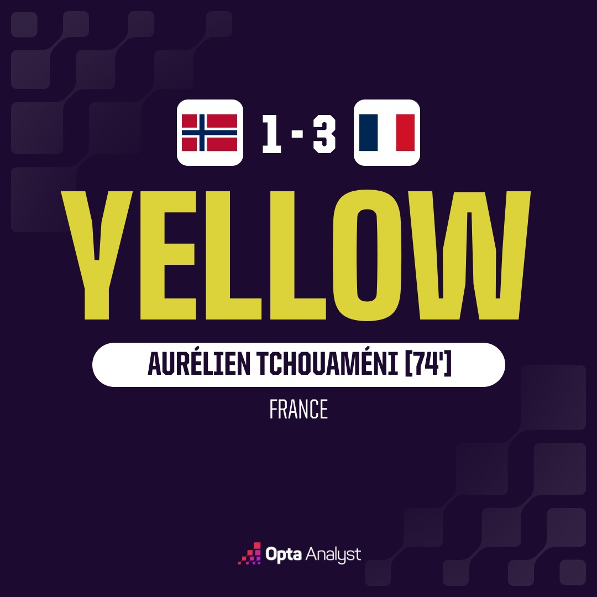
74'
A rash challenge from Aurélien Tchouaméni, who sends Thelo Aasgaard tumbling, giving Norway a free-kick. It is not in a threatening position, but it gives them a chance to get back on the ball.
72'
What a chance! Just as it looks like Norway are going to grab the goal they need to get back into the game, the chance slips away as Oscar Bobb fails to convert from a position that would usually have resulted in a goal.
71'
There is plenty of possession for France, with 67.02% compared to Norway 32.98 % in the last 15 minutes. However, France have not been able to turn that dominance of the ball into a goal.
68'
Still behind, but Norway are refusing to roll over - defensive urgency rising as they fend off more pressure and push for a late turnaround.
67'
A foul from Morten Thorsby on Manu Koné sees France win a free-kick, but it is not in a dangerous position, so Norway should be confident they can defend it easily enough.
66'
Henrik Falchener’s match is over as Norway decide to make a substitution. Sondre Langås enters the field in what looks like a tactical change.
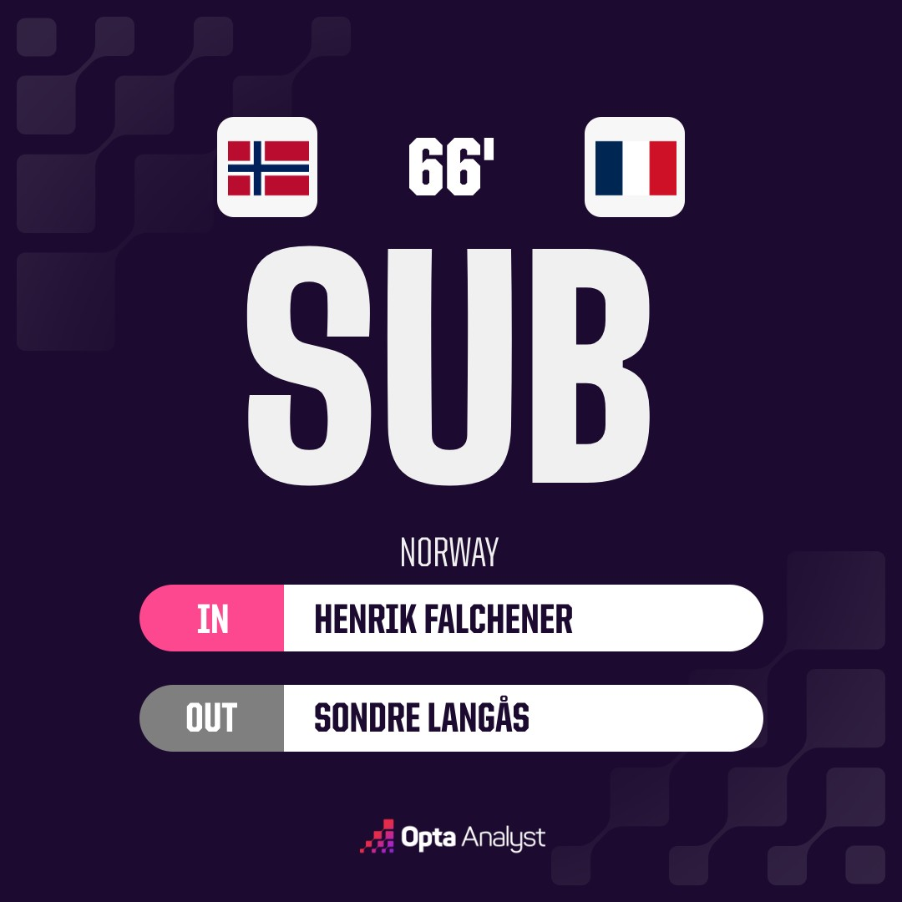
66'
With 25 minutes left to play, it’s a good chance to check in on the shot count. France have mustered 16 so far, with 8 of those landing on target. On the other hand, Norway have gotten 7 of their 3 of attempts on target.
65'
The France manager is looking to the substitutes’ bench, bringing on Bradley Barcola in place of Ousmane Dembélé. Will the change make a difference? Let’s find out!
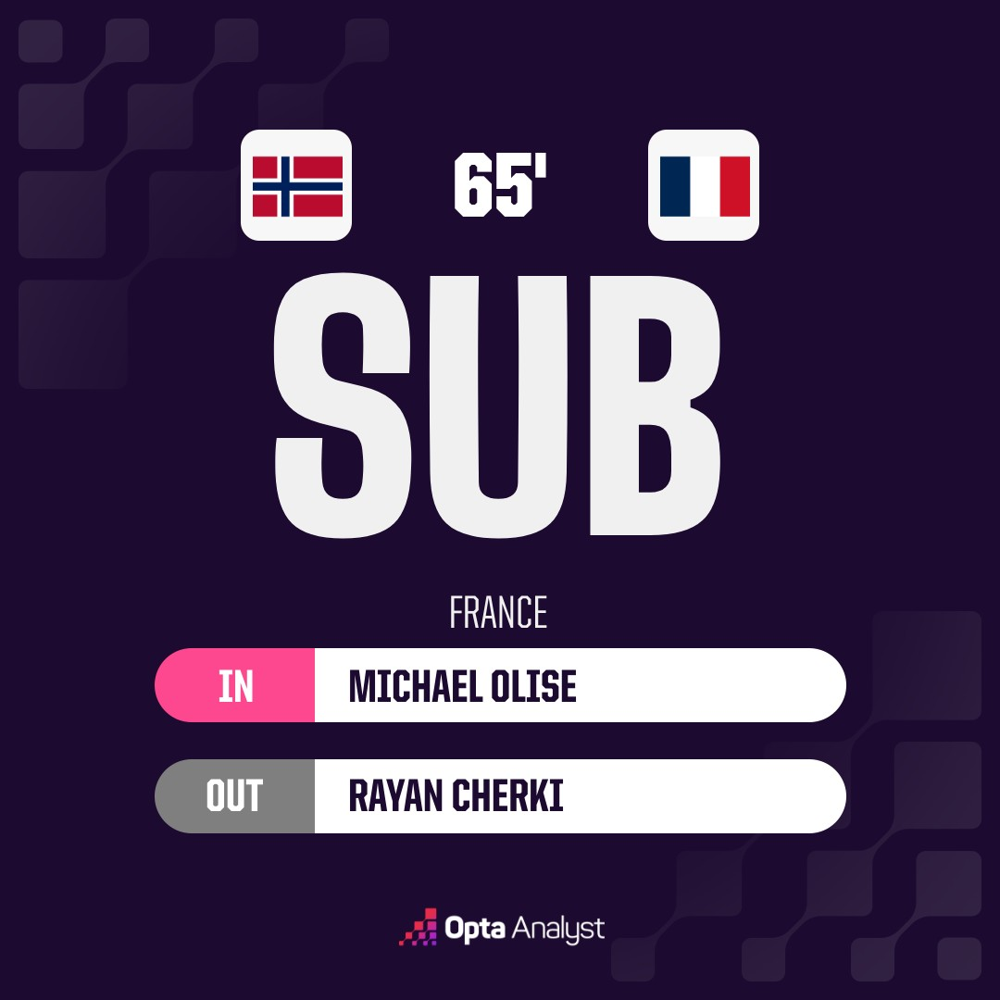
65'
A substitution for France sees Michael Olise replaced by Rayan Cherki. There does not appear to be any obvious sign of an injury, so that is a tactical switch.
64'
That might have been going in! A fantastic block from Patrick Berg, who gets in the way of a goal-bound effort from Kylian Mbappé. Would the goalkeeper have been beaten? We will never know.
64'
Great block from Dayot Upamecano, as they get in the way of an attempt from Oscar Bobb that might have been set to cause the goalkeeper some problems. Solid defending from the France player.
63'
Free-kick! A foul from Maxence Lacroix on Jørgen Strand Larsen. It is well away from France’s goal, so it is unlikely to result in a chance for Norway.
63'
It's all hands on deck for France as they defend their lead, making a wave of critical blocks and clearances
63'
Still behind, but Norway are refusing to roll over - defensive urgency rising as they fend off more pressure and push for a late turnaround.
62'
A foul from Oscar Bobb on Théo Hernández sees France win a free-kick, but it is not in a dangerous position, so Norway should be confident they can defend it easily enough.
61'
Offside! Maxence Lacroix thought they were through on goal, but the Norway defence stepped up in time to catch them offside, and the assistant referee puts their flag up.
61'
A free-kick in a dangerous position now for France, after a foul from Leo Østigård on Désiré Doué. Can France make Norway pay for that rashness from Leo Østigård?
56'
No luck! Kylian Mbappé takes on a shot that, had they got it right, might have been set to test the goalkeeper, but instead it is sent off target and Norway come away unscathed.
55'
A chance goes begging as Leo Østigård gets off a shot that does not hit the target. They might have done better with that one, but instead it is a goal-kick to France.
50'
MISSED! Huge frustration for Norway and Jørgen Strand Larsen, as they fail to finish from the penalty spot! That was a huge chance for them to get back into this game. Will they get a bigger one?
48'
SPOT-KICK! A clumsy decision by Théo Hernández, who has committed a foul inside France’s area, and now Norway have the chance to get back into this game. They just have to convert this penalty…
46'
Substitution! Marcus Pedersen replaces Fredrik Bjørkan for Norway as the manager shuffles the pack. Can Marcus Pedersen make an impression as this match continues?
46'
The Norway manager is looking to the substitutes’ bench, bringing on Morten Thorsby in place of Kristian Thorstvedt. Will the change make a difference? Let’s find out!
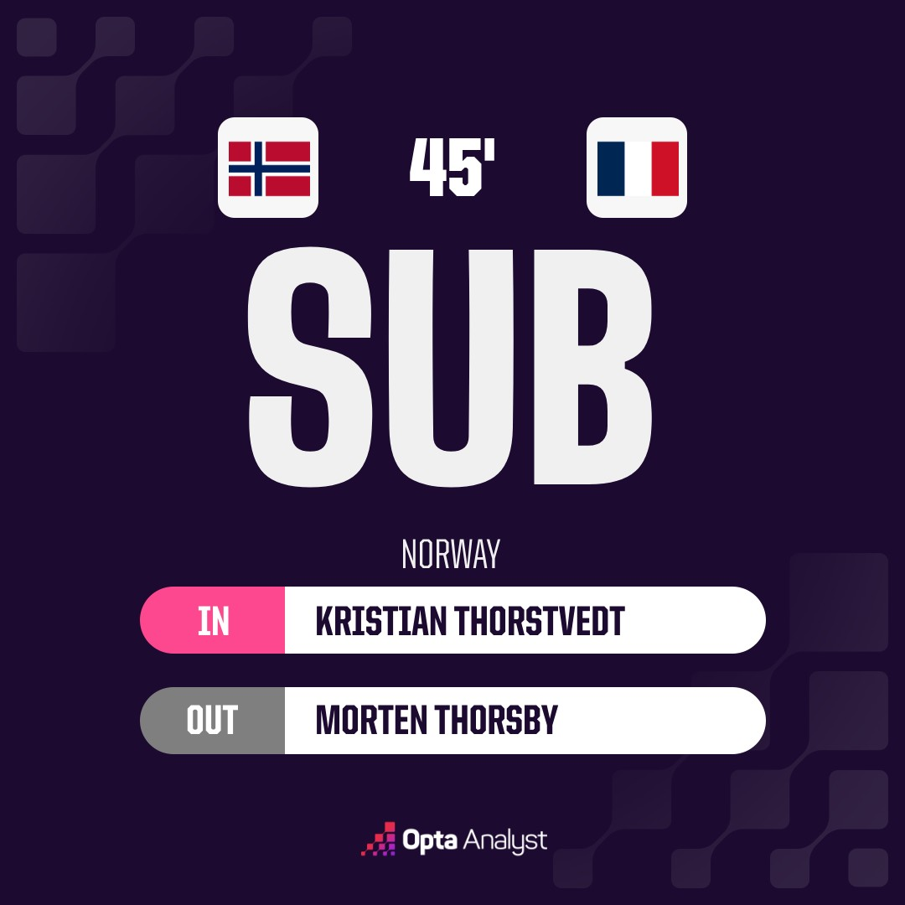
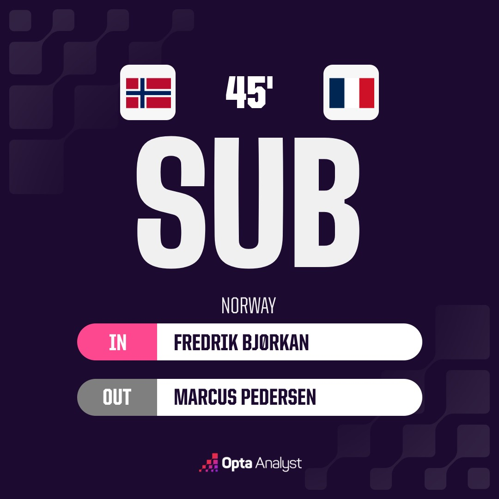
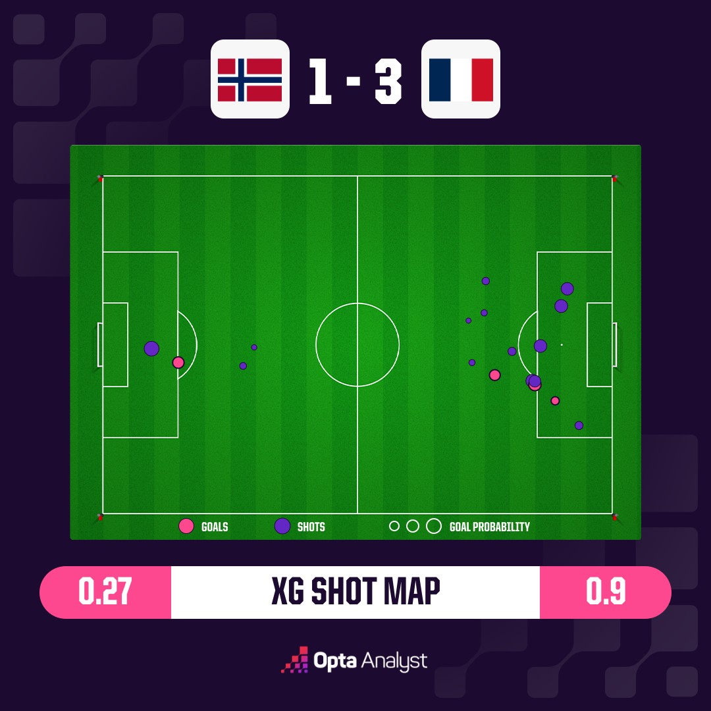
45+6'
Half-time! The referee blows the whistle and it is time for the interval. As we reach the break it is Norway 1-3 France at Boston Stadium.
45+6'
It has been 30 minutes since Norway last attempted a shot in this game.
45+5'
Smart football from France in this second period. They're keeping possession nicely with another patient build-up, content to manage their advantage while staying alert for counter-attacking opportunities.
45+2'
Free-kick! A foul from Andreas Schjelderup on Michael Olise. It is well away from Norway’s goal, so it is unlikely to result in a chance for France.
45+1'
France have attempted the last 6 shots in this game, Norway last shot was taken by Thelo Aasgaard in the 21st minute.
45+1'
MISS! A shot from Michael Olise ends up being off target. They might have done a bit better with that one, but it remains France 3-1 Norway.
45+1'
Aurélien Tchouaméni goes in on Thelo Aasgaard and concedes a foul. The free-kick is not in a particularly dangerous area from France’s viewpoint, though.
45+1'
Excellent defensive work from France; their organization and success in key duels are effectively safeguarding their lead.
45+1'
Despite trailing, Norway are showing real defensive grit, digging in and stopping further damage as they try to build a platform.
37'
Great defending from France, who are staying organised and winning key battles to preserve their lead.
36'
Good play from Andreas Schjelderup, who draws a foul from Dayot Upamecano to hand Norway a free-kick in a dangerous position. Will they create something from this set-piece?
35'
That is a disappointing effort from Aurélien Tchouaméni, who went for glory but got their attempt wrong, and the shot sailed off target. A frustrating moment for France.
32'
Aurélien Tchouaméni has assisted his first goal in the 2026 FIFA World Cup.
32'
Ousmane Dembélé has scored his fourth goal in the 2026 FIFA World Cup.
32'
Ousmane Dembélé! That is another goal for France, who now lead 3-1! Is there any way back into this one for Norway? Their prospects look bleak, unless they can find a swift response.
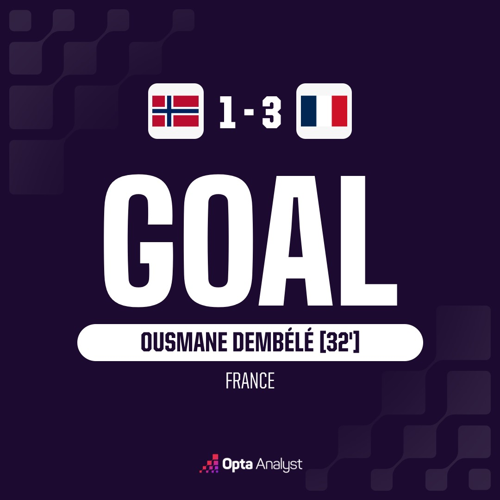
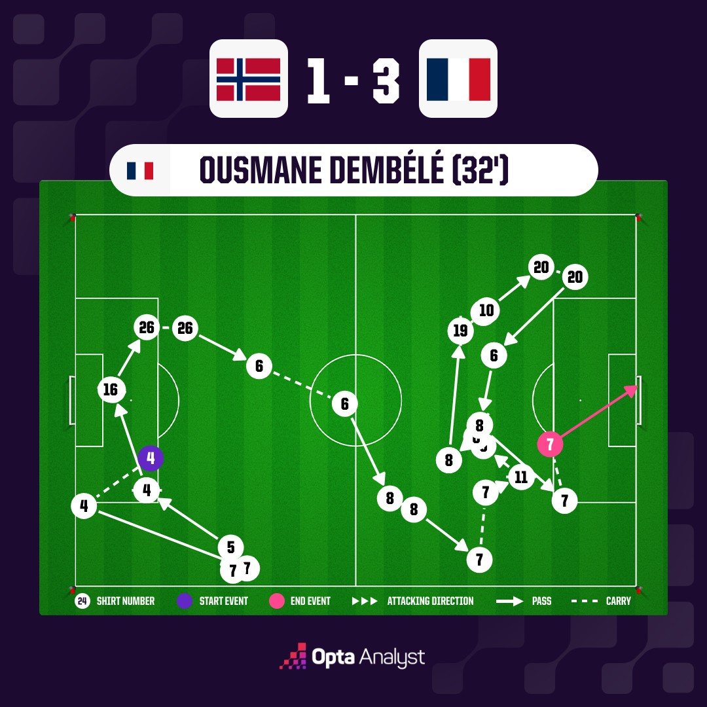
28'
A free-kick to France, as Kristian Thorstvedt goes in and fouls Théo Hernández. However, Norway will not mind giving one away in this area too much, with plenty of distance to their goal.
24'
No luck! Théo Hernández takes on a shot that, had they got it right, might have been set to test the goalkeeper, but instead it is sent off target and Norway come away unscathed.
23'
MISS! A shot from Désiré Doué ends up being off target. They might have done a bit better with that one, but it remains France 2-1 Norway.
23'
Great block from Thelo Aasgaard, as they get in the way of an attempt from Michael Olise that might have been set to cause the goalkeeper some problems. Solid defending from the Norway player.
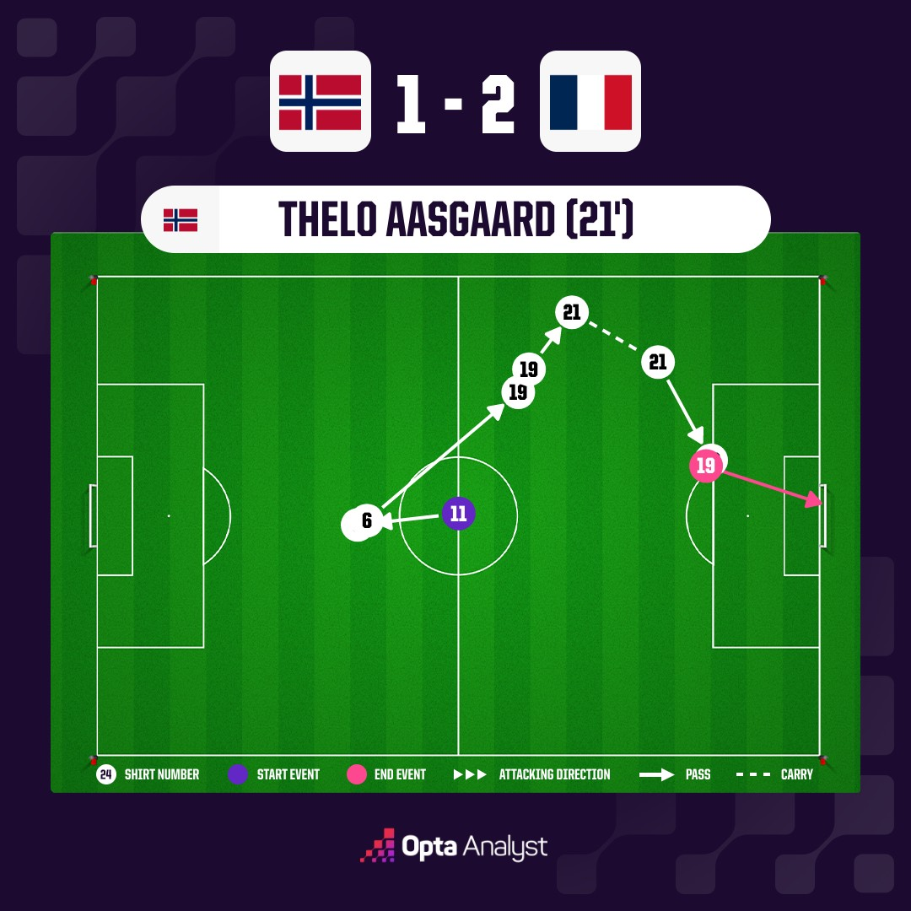
21'
Andreas Schjelderup has assisted his first goal in the 2026 FIFA World Cup.
21'
Thelo Aasgaard has scored his first goal in the 2026 FIFA World Cup.
21'
GOAL! It is game well and truly on after Thelo Aasgaard goal cuts France lead down to one. That has given Norway some hope, but will they be able to go on and level the score?
20'
Kylian Mbappé has assisted his second goal in the 2026 FIFA World Cup.
20'
Ousmane Dembélé! That is another goal for France, who now lead 2-0! Is there any way back into this one for Norway? Their prospects look bleak, unless they can find a swift response.
20'
Ousmane Dembélé has scored his third goal in the 2026 FIFA World Cup.
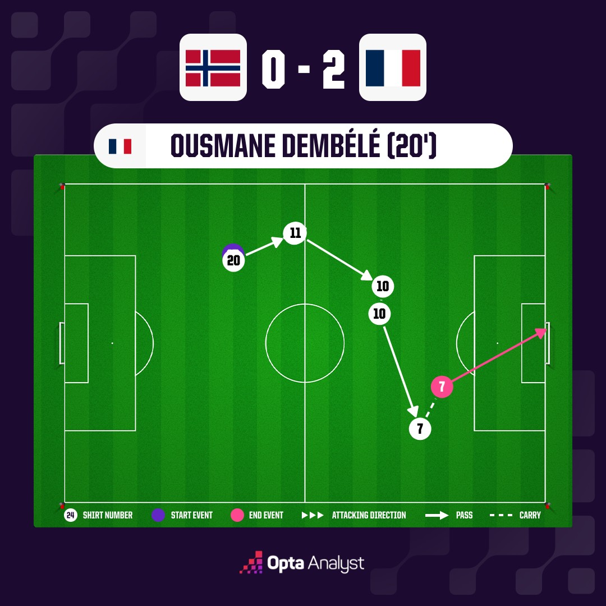
19'
BLOCK! An intervention from Aurélien Tchouaméni might have just prevented a goal, with the defending player getting in the way of an attempt from Thelo Aasgaard. Solid defending there!
17'
Egil Selvik has made 5 saves, his highest total in a single match in the FIFA World Cup.
17'
Save! A big stop from Egil Selvik, who reacts to keep out Kylian Mbappé's attempt from inside the area.
16'
Offside! Ousmane Dembélé thought they were through on goal, but the Norway defence stepped up in time to catch them offside, and the assistant referee puts their flag up.
15'
Norway may be behind, but they’re battling hard defensively to stop the gap from widening. A gritty response at the back.
14'
HUGE CHANCE GOES BEGGING! What a miss that is from Jørgen Strand Larsen, who looked all set to score a goal that their team need, but instead fails to direct their attempt into the back of the net. That was a big, big opportunity for Norway.
13'
A free-kick in a dangerous position now for Norway, after a foul from Aurélien Tchouaméni on Kristian Thorstvedt. Can Norway make France pay for that rashness from Aurélien Tchouaméni?
13'
Shot blocked! Michael Olise unleashes an attempt at goal, but the ball does not reach its target thanks to Leo Østigård, who makes a solid block to stem the danger – for now.
13'
Strong early signals from France at the back — calm and commanding as they break up attacks with ease.
12'
A free-kick to Norway, as Maxence Lacroix goes in and fouls Jørgen Strand Larsen. However, France will not mind giving one away in this area too much, with plenty of distance to their goal.
11'
Mike Maignan is called into action to keep out a shot from outside the box by Kristian Thorstvedt. The effort from the Norway player was on target, but France shot-stopper got to it.
10'
That is a booking for Patrick Berg, who has received their first yellow card. They are not happy with the decision, but it is done now, and they will have to be careful for the rest of this game.
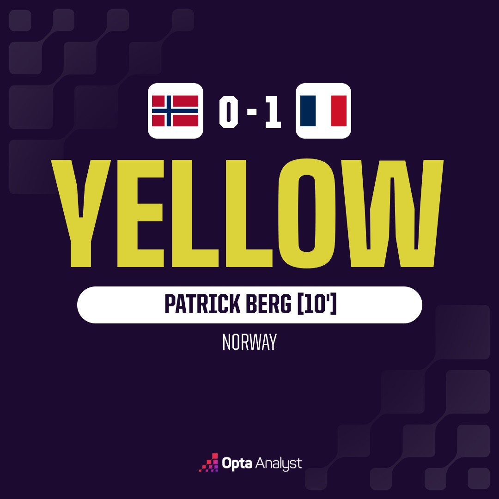
10'
A rash challenge from Patrick Berg, who sends Michael Olise tumbling, giving France a free-kick. It is not in a threatening position, but it gives them a chance to get back on the ball.
9'
A rash challenge from Théo Hernández, who sends Oscar Bobb tumbling, giving Norway a free-kick. It is not in a threatening position, but it gives them a chance to get back on the ball.
8'
That was hopeful! A bit of a punt from Désiré Doué, who goes for goal from distance, but Egil Selvik makes the save.
8'
A foul from Kristian Thorstvedt on Théo Hernández sees France win a free-kick, but it is not in a dangerous position, so Norway should be confident they can defend it easily enough.
7'
Kylian Mbappé has assisted his first goal in the 2026 FIFA World Cup.
7'
France have avoided defeat in their last 28 matches when scoring first in the FIFA World Cup, since a 2-3 loss to Poland on 10th July 1982.
7'
Ousmane Dembélé has scored his second goal in the 2026 FIFA World Cup.
7'
GOAL! France have gone in front! Ousmane Dembélé makes a dream start to the game by providing the early goal. France have the advantage now – how will Norway respond to falling behind in the early stages?
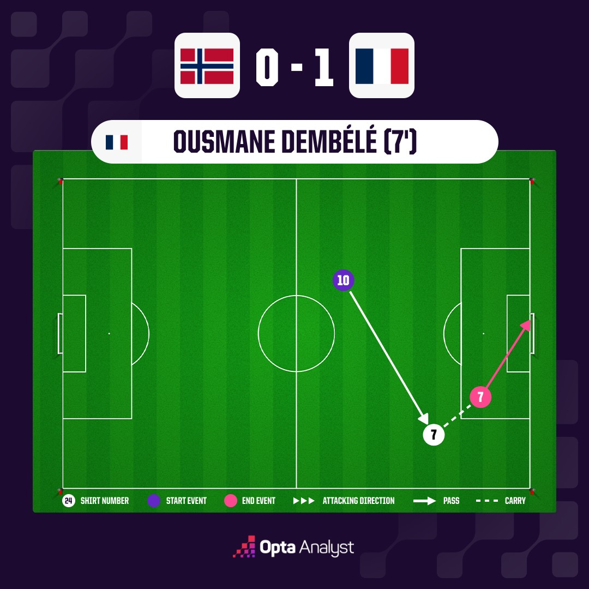
6'
It’s been tight so far, and Norway are making sure it stays that way with strong defensive discipline and well-timed clearances.
6'
Andreas Schjelderup goes in on Jules Koundé and concedes a foul. The free-kick is not in a particularly dangerous area from Norway’s viewpoint, though.
5'
Désiré Doué goes for goal with a strike from distance, but Egil Selvik is able to watch it all the way and make the save. A bit of a tester, there.
4'
Save! A big stop from Egil Selvik, who reacts to keep out Manu Koné's attempt from inside the area.
1'
CLOSE! Kylian Mbappé gets into a decent shooting position inside the Norway area, and manages to find space to get an effort off. However, Egil Selvik is equal to it.
1'
WOODWORK! A great effort from Kylian Mbappé, but they get unlucky as the post comes to Norway rescue. A lucky escape for them, and an unfortunate moment for France.
1'
We are under way as Norway kick off at Boston Stadium. Let's hope an entertaining contest is in store.
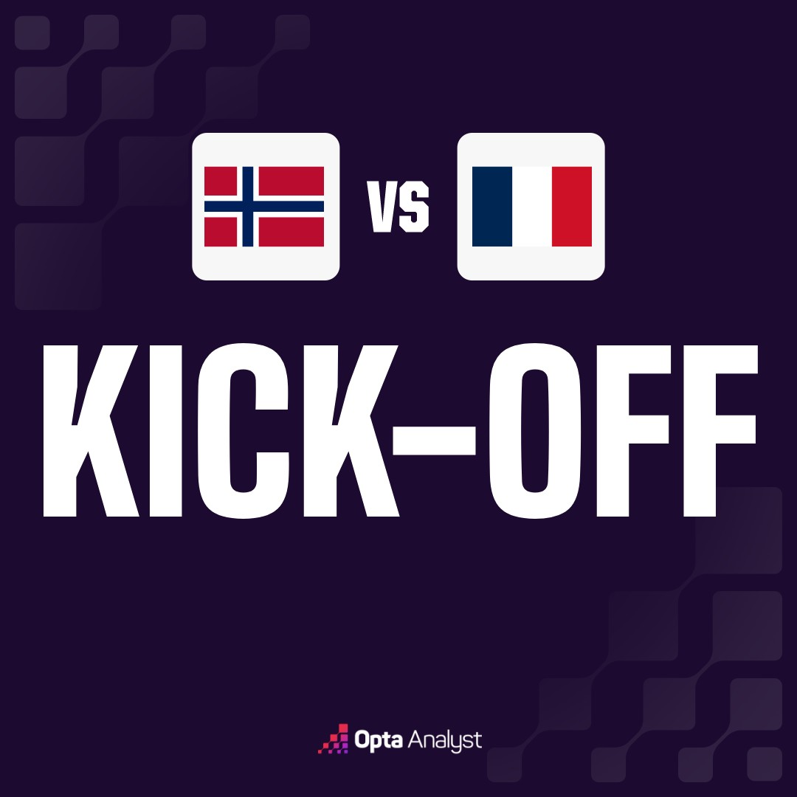
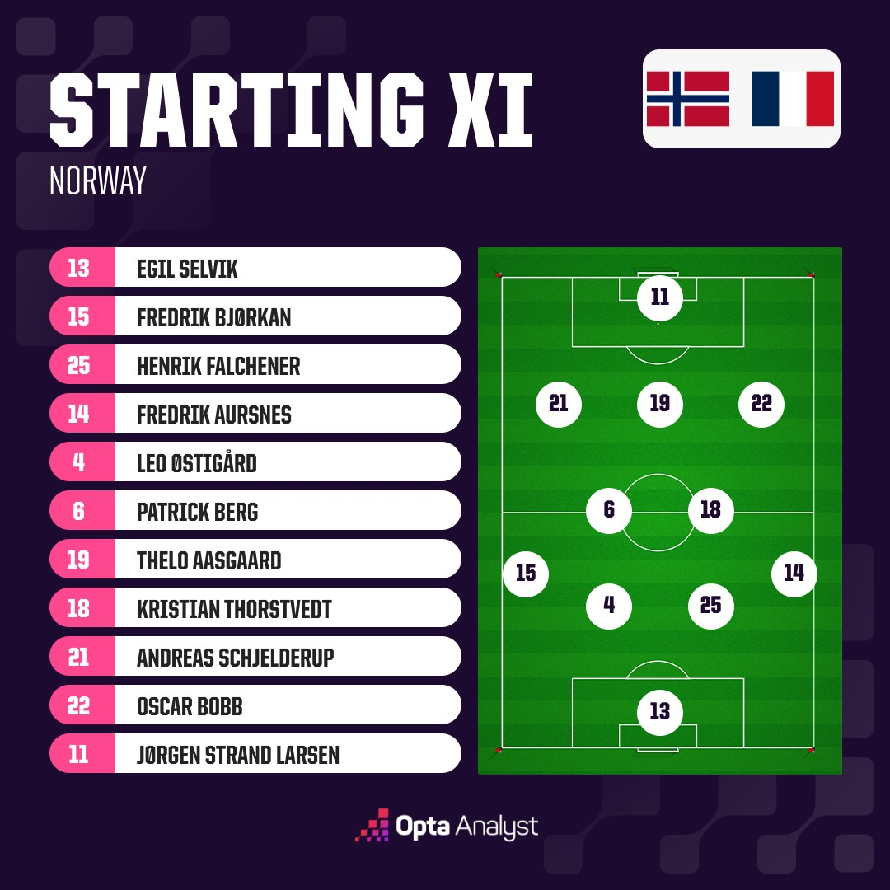
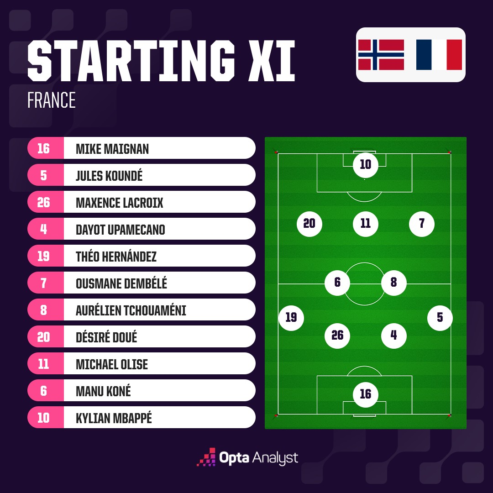
Kylian Mbappé is making his 17th appearance in the FIFA World Cup.
Norway have won their last 12 matches in a row
E. Haaland has scored in the last 8 home games for Norway
There have been 3 or more goals scored in each of Norway's last 6 games
Norway have won their last 8 home matches in a row
There have been 3 or more goals scored in each of France's last 7 games
Norway play France on Friday at Boston Stadium for a FIFA World Cup group stage match between two in-form teams who have already clinched a place in the Round of 32.
Norway earned a 3-2 victory over Senegal in their last group stage match on June 22. Erling Haaland netted a brace to lead the scoring. They are unbeaten in their last five games in all competitions. In six games this year, they have three wins, two draws, and one loss.
France's last group stage game saw them triumph 3-0 over Iraq on June 22 at Philadelphia Stadium, their third straight victory. Kylian Mbappé netted a brace to lead the scoring. In 2026, they have won five and lost one.
France and Norway are first and second in the group, respectively, level on six points.
With zero points, Senegal are third in the group and still in contention for a round of 32 place. Iraq are facing elimination, sitting fourth on zero points.
The previous time the teams came up against each other it was France who secured a 4-0 victory in May 2014.
Haaland has caught the eye for Norway in World Cup play. He is the team's top scorer with four goals, which is tied for the second highest among the competition's top scorers, one of which has been the tone-setting first of the match. Mbappé has been the leading attacking threat for France, netting on four occasions in the current World Cup campaign, including two match-opening goals. The striker is tied for second in the competition's scoring charts.
France have scored in 15 straight contests in all competitions. They have hit the back of the net in every match since a Nations League meeting with Croatia in March 2025.
In their last six matches in all competitions, Norway have won three, drawn two and lost one. The Norwegian side scored 12 and conceded seven over that stretch, scoring first in four of the six contests. A majority of their goals (seven) came in the first half, while their opponents netted three times in the first 45 minutes. France have won five and lost one in their last six. The French side scored 15 and conceded six in that stretch, netting first in all six. They had six goals in the first half, while their opponents failed to find the net before the break.
-
General
Possession 43.3% 43.32756.67356.7% Possession lost in defensive half 41 412626 Possession lost in middle third 50 504848 Duels 88 888989 Duels success rate 47.7% 47.72750.56250.6% Aerial duels 21 212121 Aerial duels won 33.3% 33.33366.66766.7% Successful dribbles 7 777 Fouls won 11 1199 Offsides 1 122 Corner awarded 4 455 -
Distribution
Passes 421 421555555 Long passes 40 405353 Long passes proportion (%) 9.5% 9.5019.559.5% Passing accuracy 81.5% 81.47386.48686.5% Passes in opponents' half 199 199337337 Passing accuracy in opponents' half (%) 72.4% 72.36284.27384.3% Total passes in the final third 112 112172172 Passing accuracy in final third (%) 68.8% 68.7579.0779.1% Forward passes 240 240323323 Forward passes (%) 57.0% 57.00758.19858.2% Through balls 1 177 Final third entries 40 405757 Penalty area entries 18 182424 Total open play crosses 4 477 Crosses 9 91010 Crossing accuracy 33.3% 33.3333030.0% -
Attack
Goals 1 144 Shots 10 101818 Shots on target 4 499 Blocked shots 3 333 Headed shots 1 111 Shots outside the box 4 488 Shots inside the box 6 61010 Shots accuracy excluding blocked shots 57.1% 57.1436060.0% Shooting accuracy 40.0% 405050.0% Key Passes 7 71616 -
Defence
Tackles 17 171717 Tackles success rate 64.7% 64.70670.58870.6% Clearances 16 161919 Interceptions 13 131111 Recoveries 40 405454 Attacking third recovery 4 444 Defensive third recovery 19 192828 Midfield third recovery 17 172222 Recoveries in attacking half (%) 10.0% 107.4077.4% -
Discipline
Fouls conceded 9 91111 Yellow cards 1 111 Red cards 0 000